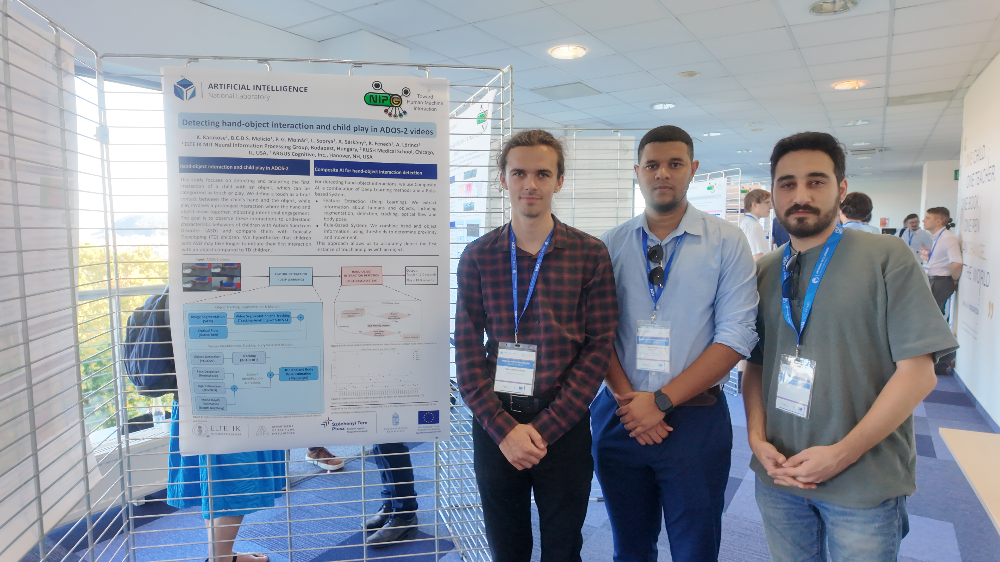

Multimodal Framework for Automatic Behavior Analysis of Children with Autism During ADOS-2
Cognitive Computation
View paperBruno Melício
Human-centered AI research, teaching and knowledge.
Selected work
Cognitive Computation
View paper
INSAR Annual Meeting
View paperINSAR Annual Meeting
View paperACM ICMI
View paper